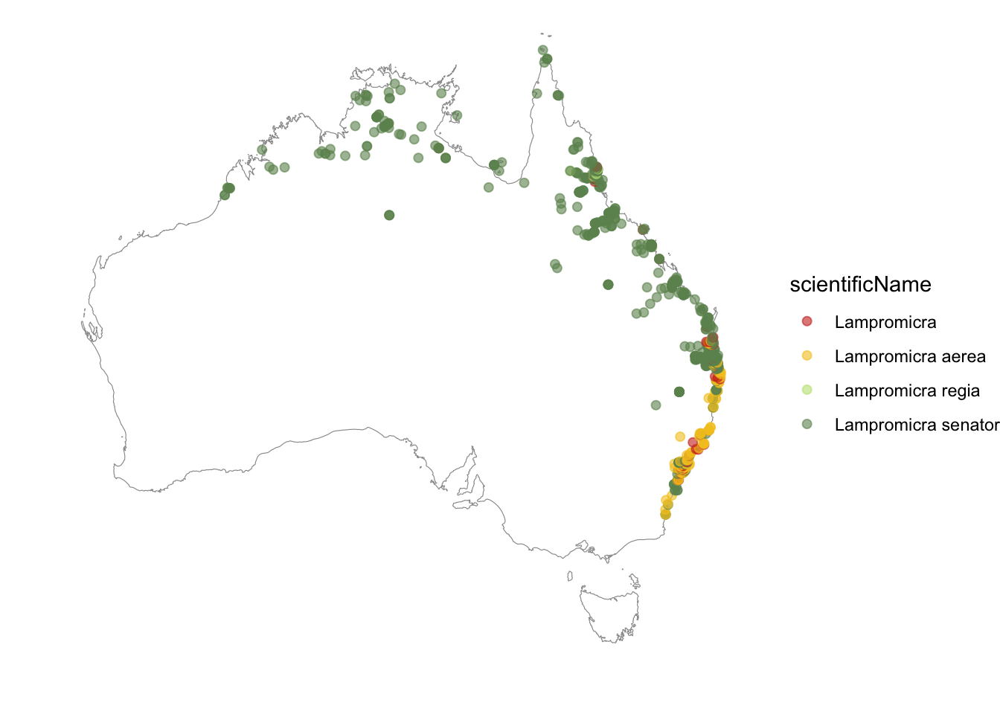
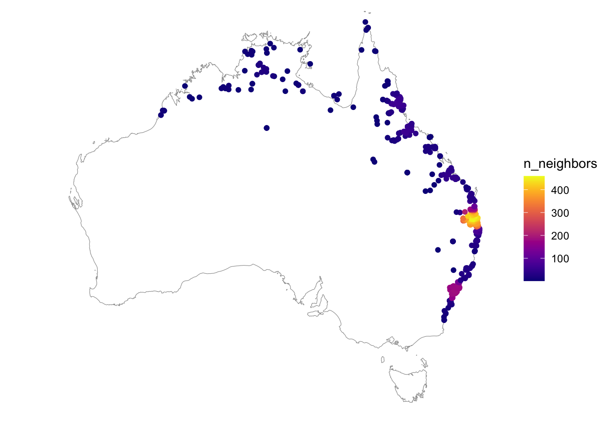
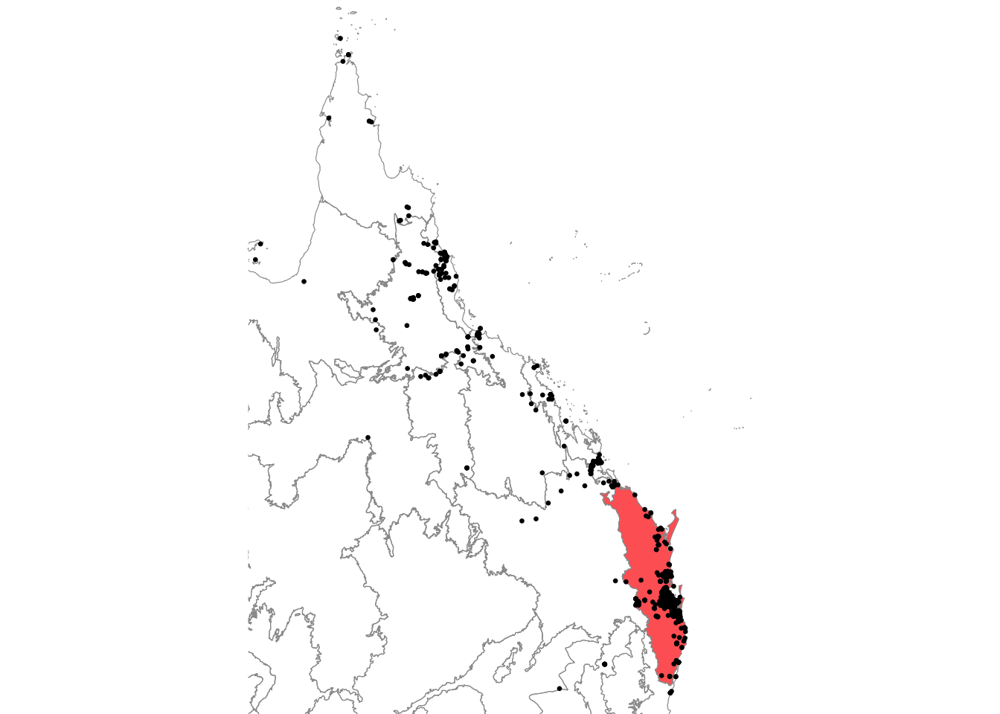
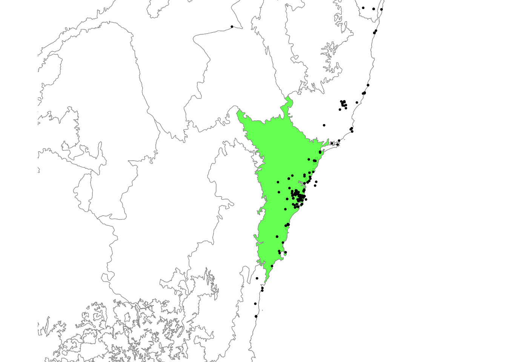

Load required packages
library(galah)
library(tidyr)
library(sf)
library(ggplot2)
library(paletteer) # colour palettes
library(ozmaps)
library(viridis)
library(gt)
library(here)
library(rmapshaper)It’s useful to investigate the spatial range of available data for your taxonomic group(s) of interest. How specific your question can be may change depending on whether the majority of data is in only a few locations or evenly spread over the entire distribution of a species or taxonomic group.
For our example question about Lampromicra, we may wish to map where observations in Australia have been made. We can do this by using the {ozmaps} package to download a nice map of Australia, plot it with sf::geom_sf(), and add our observation points on top with geom_point(). We can separate the colours of our points by setting colour = scientificName within the aes() of geom_point().
You will need to add an email address registered with the Atlas of Living Australia in galah_config() to download species information.
beetles <- galah_call() |>
galah_identify("lampromicra") |>
atlas_occurrences() |>
tidyr::drop_na() # remove any NA values
# Get map of australia, and transform to WGS84
aus <- st_transform(ozmaps::ozmap_country, 4326)
# Plot the observations on our map of Australia
ggplot() +
geom_sf(data = aus, colour = "grey60", fill = "white", alpha = 0.2) +
geom_point(
data = beetles,
mapping = aes(
x = decimalLongitude, y = decimalLatitude, colour =
scientificName
),
size = 1.8, alpha = 0.6
) +
scale_color_paletteer_d("feathers::eastern_rosella") +
coord_sf(xlim = c(110, 155), ylim = c(-45, -10)) +
theme_void()
Plotting our points shows us that observations are spread along the northern and eastern coasts of Australia. We can also see that some observations are only identified to the genus level (e.g. Lampromicra), rather than to a specific species (e.g. Lampromicra aerea).
There are several places on the east coast of Australia where there are clumps of overlapping points. It’s difficult to tell how many observations there really are in those areas. To investigate, we can recreate this into a point density plot using the {ggpointdensity package}.
library(ggpointdensity)
ggplot() +
geom_sf(data = aus, colour = "grey60", fill = "white", alpha = 0.2) +
geom_pointdensity(
data = beetles,
mapping = aes(x = decimalLongitude, y = decimalLatitude)
) +
scale_color_paletteer_c("viridis::plasma") +
coord_sf(xlim = c(110, 155), ylim = c(-45, -10)) +
theme_void()
Adding the density of overlapping points to our map allows us to see that there is one area with many more observations—more than 400 observations are found in the light yellow area!
Using this information, we might decide to make our research question more specific to the region where there are the most records of Lampromicra.
Let’s have a look at these records in the context of their IBRA bioregions (distinct areas defined on a common climate, geology, landform, native vegetation and species information).
To find out what region(s) the genus Lampromicra is most common, you can group_by the IBRA region field code in {galah} (use search_fields to see others).
ibra_counts <- galah_call() |>
galah_identify("Lampromicra") |>
galah_group_by("cl1048") |> # IBRA regions
atlas_counts()
gt(head(ibra_counts))| cl1048 | count |
|---|---|
| South Eastern Queensland | 498 |
| Sydney Basin | 188 |
| Victoria Bonaparte | 81 |
| Brigalow Belt North | 74 |
| Wet Tropics | 72 |
| Einasleigh Uplands | 65 |
We can see that South East Queensland has the most records followed by Sydney Basin. At this point, it would be useful to know if this is because of a sampling bias towards these large metropolitan areas, or if Lampromicra is actually more common in these areas. We will not cover the process here, but see this article on quantifying geographic sampling bias with {sampbias} to learn more.
shapefile <- st_read(
here(
"data",
"shapefiles",
"IBRA7_regions",
"ibra7_regions.shp"
),
quiet = TRUE
) |>
ms_simplify(keep = 0.1)
# South Eastern Queensland
ggplot() +
geom_sf(
data = shapefile %>% filter(REG_NAME_7 == "South Eastern Queensland"),
aes(fill = "red"),
colour = "grey60",
alpha = 0.7
) +
geom_sf(
data = shapefile %>% filter(REG_NAME_7 != "South Eastern Queensland"),
aes(fill = "white"),
colour = "grey60",
alpha = 0.2
) +
geom_point(
data = beetles,
mapping = aes(
x = decimalLongitude,
y = decimalLatitude
),
size = 0.5
) +
coord_sf(
xlim = c(140, 155),
ylim = c(-30, -10)
) +
scale_fill_identity() +
theme_void()
# Sydney Basin
ggplot() +
geom_sf(
data = aus,
colour = "grey60",
fill = "white",
alpha = 0.2
) +
geom_sf(
data = shapefile %>% filter(REG_NAME_7 == "Sydney Basin"),
aes(fill = "green"),
colour = "grey60",
alpha = 0.7
) +
geom_sf(
data = shapefile %>% filter(REG_NAME_7 != "Sydney Basin"),
aes(fill = "white"),
colour = "grey60",
alpha = 0.2
) +
geom_point(
data = beetles,
mapping = aes(
x = decimalLongitude,
y = decimalLatitude
),
size = 0.5
) +
coord_sf(
xlim = c(145, 155),
ylim = c(-37, -30)
) +
scale_fill_identity() +
theme_void()

Alternatively, we might decide that there isn’t enough data (or data of a good enough quality) to make accurate estimates about Lampromicra.
Depending on the spatial specificity of your question, you might have to adjust your data scope or your question accordingly.